Product Attributes
UCSD MGT 100 Week 03
Let’s reflect
Market Mapping
- Positioning in attribute space
- Economic theories of differentiation: Vertical, horizontal
- Perceptual maps
Marketing strategy
Segmentation: How do customers differ
Targeting: Which segments do we seek to attract
Positioning
- Objectively, where are we - Where do customers perceive us to be - What value proposition do we present - How do we want to influence consumer perceptionsMarket mapping helps with Positioning
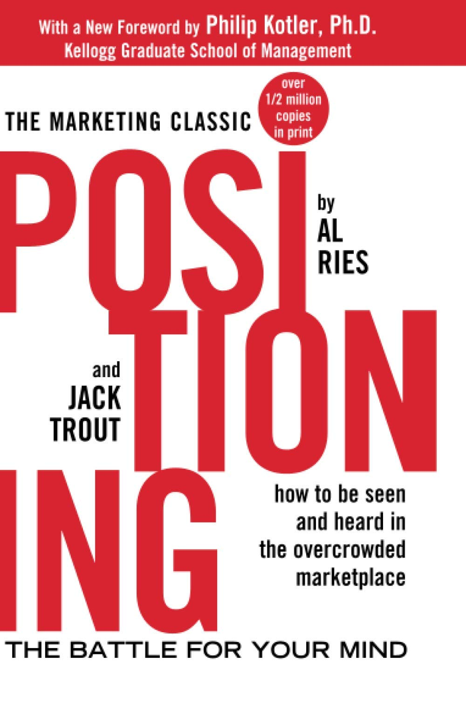
Market Maps
Market maps use customer data to depict competitive situations. Why?
- Understand brand/product positions in the market - Track changes - Identify new products or features to develop - Understand competitor imitation/differentiation decisions - Evaluate results of recent tactics - Cross-selling, advertising, identifying complements or substitutes, bundles...
Market maps
We often lack ground truth data
- Using a single map to set strategy is riskyRepeated mapping builds confidence
(“Movies, not pictures”)Many large brands do this regularly
Vertical Diff., AKA quality
Product attributes where more is better, all else constant
Efficacy, e.g. CPU speed or horsepower
Efficiency, e.g. power consumption
Input good quality (e.g. clothes, food)
Important: not everyone buys the better option (why not?)
Horizontal Diff., AKA fit or match
- Product attributes w heterogeneous valuations
- Physical location
- Familiarity, e.g. what you grew up with
- Taste, e.g. sweetness or umami
- Brand image, e.g. Tide, Jif, Coca-Cola
- Complements, e.g. headphones or charging cables
Hotelling (1929)
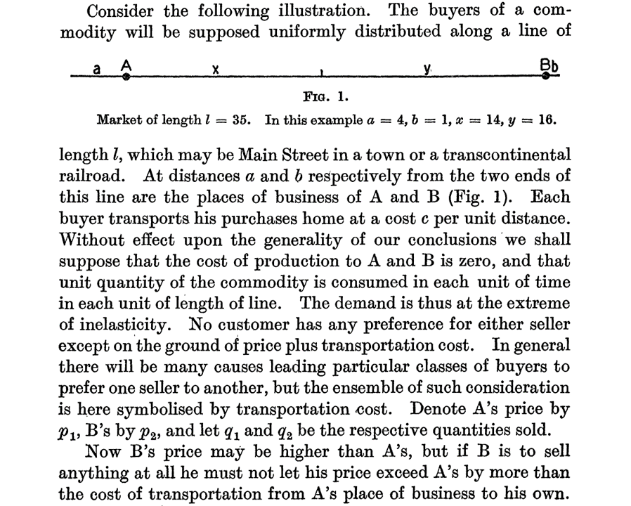
Ice cream vendors
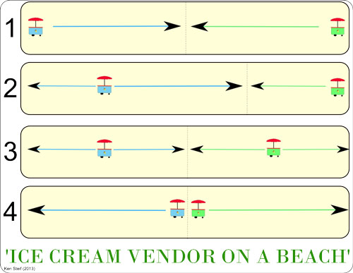
Median voter theorem
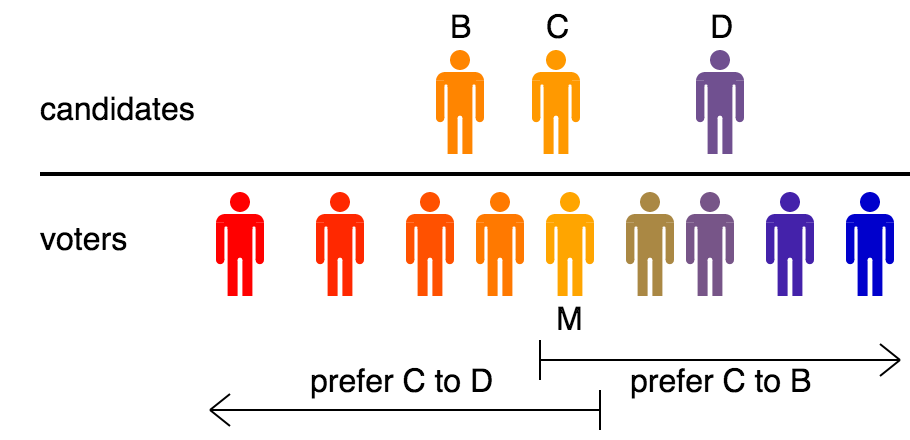
Mapping Approach 1: Product Attribute space
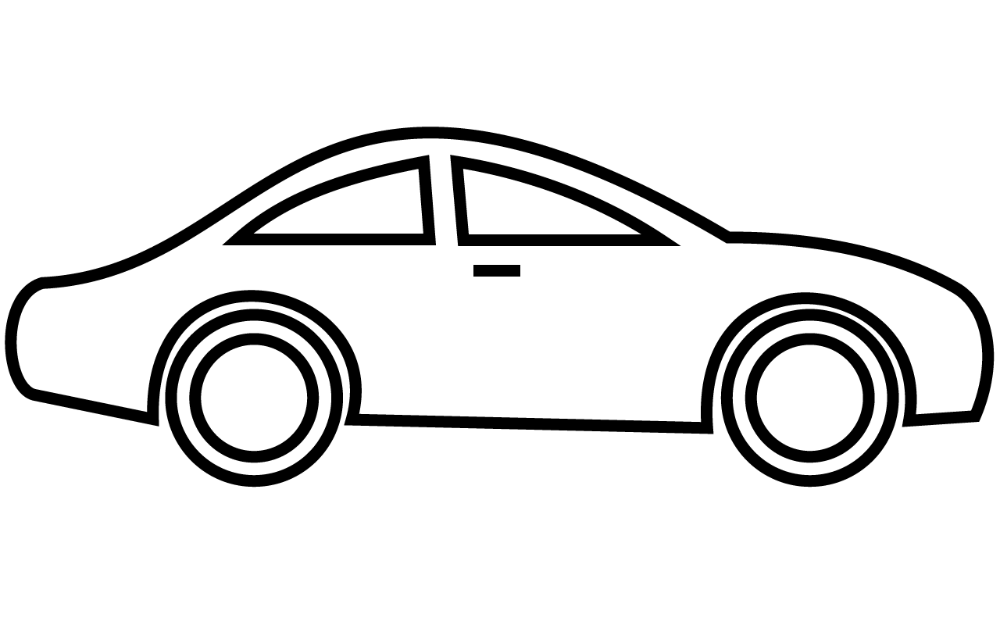
Principal Components Analysis (PCA)
- Pearson (1901) invented; Hotelling rediscovered (1933 & 36)
- Project datapoints into a lower-dimensional space
For \(J\) products with \(K<J\) continuous attributes, we have a \(J\)-by-\(K\) matrix
Consider this a \(K\)-dimensional space containing \(J\) points
Calculate the \(K\)-by-\(K\) covariance matrix of the attributes
1st \(x\) eigenvectors of the attribute covariance matrix give unit vectors to map products in \(x\)-dimensional space
- We'll often use just 2, to draw a picture
Key questions
- How to measure intangible attributes like trust?
- How do we know the most important attributes?
- What about categorical attributes?
- How should we weigh attributes?
- What happens when relevant attributes change?
Do we know the most important attributes?
- Multidimensional scaling draws perceptual maps
- Suppose you can measure product similarity
- For \(J\) products, populate the \(JxJ\) matrix of similarity scores
- Use PCA to reduce to a lower-dimensional space
- Pro: We don’t need to predefine attributes
- Con: Axes are hard to interpret
Example: Netzer et al. (2012)
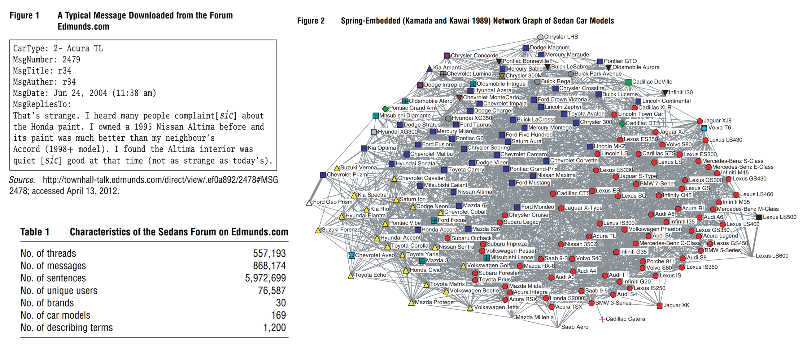
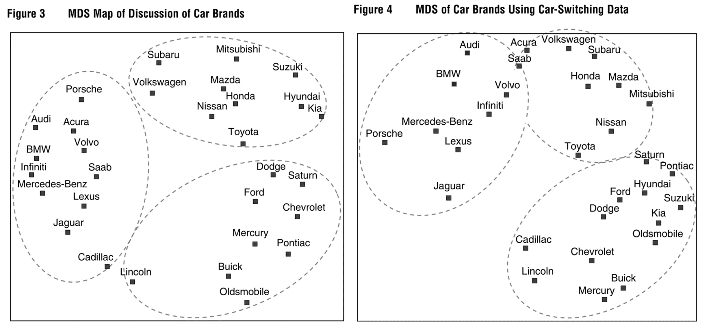
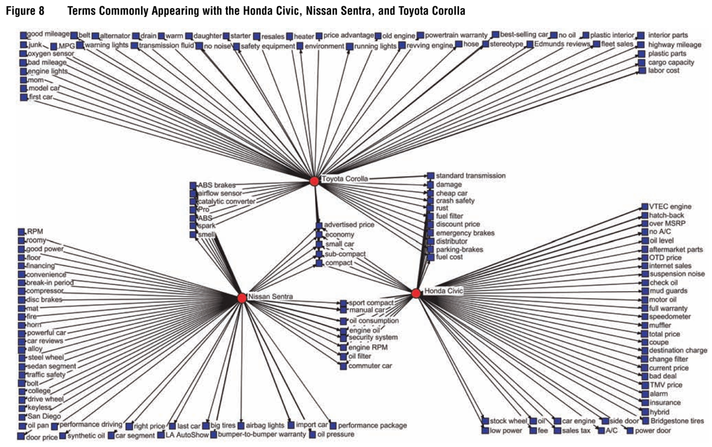
Multidimensional scaling
Summary: Run PCA on a square symmetric matrix of (dis)similarity scores, then project into 2D space
- With J brands, we have J points in J dimensions. Each dimension j indictes similarity to brand j. PCA can project from J dimensions into 2D for plottingMDS Intuition, in 2D space
- With a ruler and map, measure distances between 20 US cities ("similarity")
- Record distances in a 20x20 matrix: PCA into 2D should recreate the map
- But, we don't usually know the map we are recreating, so we look for ground-truth comparisons to indicate credibility and reliability
Examples:
- PoliSci: why/which political candidates are perceived as being similar
- Psychologists: understand perceptions and evaluation of personality traits
- Marketers: how consumers perceive brands or perceive product attributesWhat about categorical attributes?
- Embeddings map discrete attributes into continuous space. They project words onto lower-dimensional spaces based on their co-occurrence with other words
- Imagine every sentence is a \(N\)-dim row of counts,
for \(N\) total words - We run PCA on the sentence-by-word matrix
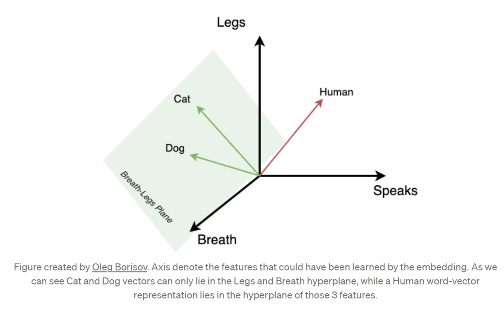
How should we weigh product attributes?
Demand modeling uses product attributes to explain purchase data
Heterogeneous demand modeling uses product attributes and customer attributes to explain purchases
Related: Conjoint analysis estimates attribute weights in simulated choice environments
- Key dfce: Demand models use observed choices from uncontrolled market environments, conjoint creates hypothetical choice data in controlled experiments
Example: Mapping e-commerce markets
- Kumar, Eckles & Aral (2020) observe product views and sales for 534k users looking at 35k products in 947k sessions
- Assume products that are co-purchased are complements
- Assume products that are co-viewed but not co-purchased are substitutes
- Reduced 100-dim attribute space to 2 dims, to identify optimal bundles
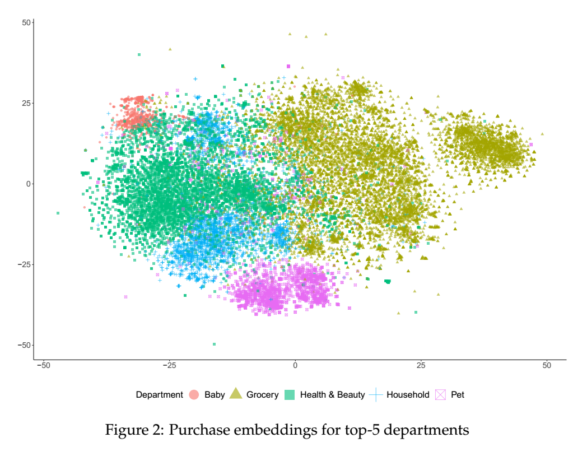
PCA FAQ
How do I interpret the principal components?
- Each principal component is a linear combination of the larger space's axes - Principal components are always orthogonal to each other, by construction - PCA drawback: loss of interpretability of absolute points in spaceWhat are the main assumptions of PCA?
- Data are linearly related - Data variation indicates information importance - Principal components that explain the most variation matter mostHow do I choose the # of principal components?
- Business criteria: 1, 2 or 3 if you want to visualize the data - Statistical criteria: Cume variance explained, scree plot, eigenvalue > 1What are some similar tools to PCA?
- There are many: Factor analysis, linear discriminant analysis, independent component analysis, ... all reduce data using various goals and methods
How does PCA relate to K-means?
Both are unsupervised ML algos
- But they serve different purposes & can be used together - E.g., Netzer et al. ran PCA in 2 different datasets (auto reviews & auto trade-ins), mapped brands in 2-D space within each, then ran K-means in each to facilitate visual comparison of resultsK-Means identifies clusters within a dataset
- K-Means never discards data - In a sense, K-Means augments a dataset by identifying similarities within itPCA combines data dimensions to condense data with minimal information loss
- PCA is designed to optimally reduce data dimensionality - PCA facilitates visual interpretation but does not identify similarities
Conjoint Analysis
Generate consumer choice data, analyze it to
- Use a supervised choice model to map the market
- choose locations in attribute space
- predict sales and profits
Choosing Product Attributes
Until now, we studied existing product attributes
- What about choosing new product attribute levels?
- Or what about introducing new attributes?
Enter conjoint analysis:
Survey and model to estimate attribute utilitiesProbably the most popular quant marketing framework
- Autos, phones, hardware, durables - Travel, hospitality, entertainment - Professional services, transportation - Consumer package goodsCombines well with cost data to select optimal attributes
How to do conjoint analysis
Identify \(K\) product attributes and levels/values \(x_k\)
Hire consumers to make choices
Sample from product space, record consumer choices
Specify model, i.e. \(U_j=\sum_{k}x_{jk}\beta_k-\alpha p_j+\epsilon_j\)
and \(P_j=\frac{\sum_{k}x_{jk}\beta_k-\alpha_k p_j}{\sum_l\sum_{k}x_{lk}\beta_k-\alpha p_l}\)Calibrate choice model to estimate attribute utilities
Combine estimated model with cost data to choose product locations and predict outcomes
Trucks Example
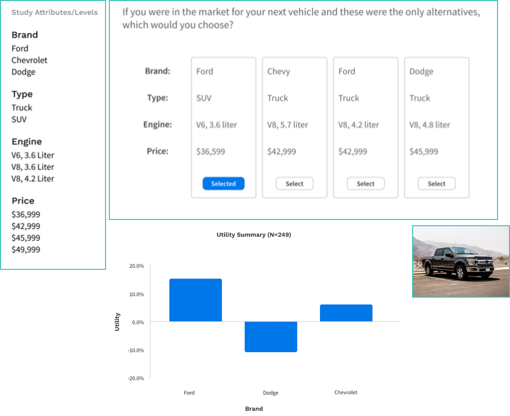
Phones/Service Plans Example
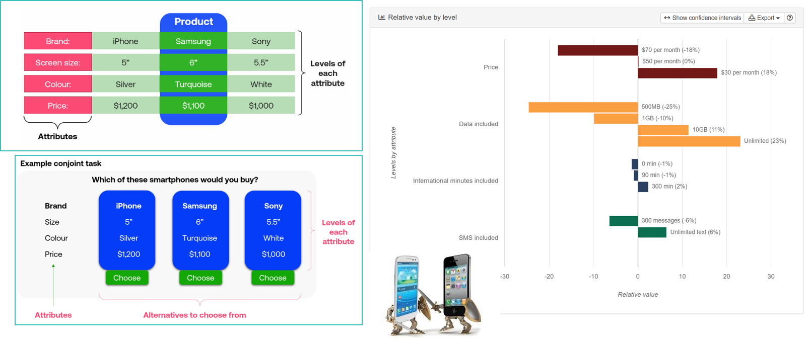
Case study: UberPOOL
In 2013, Uber hypothesized
- some riders would wait and walk for lower price - some riders would trade pre-trip predictability for lower price - shared ridership could ↓ average price and ↑ quantity - more efficient use of drivers, cars, roads, fuel
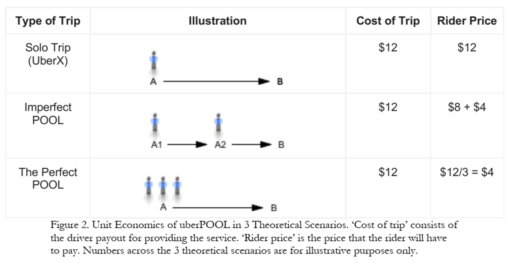
Business case was clear! But …
Shared rides were new for Uber
- Rider/driver matching algo could reflect various tradeoffs - POOL reduces routing and timing predictabilityUber had little experience with price-sensitive segments
- What price tradeoffs would incentivize new behaviors? - How much would POOL expand Uber usage vs cannibalize other services?Coordination costs were unknown
- "I will never take POOL when I need to be somewhere at a specific time" - Would riders wait at designated pickup points? - How would comunicating costs upfront affect rider behavior?So, Uber used market research to design UberPOOL
Approach
23 in-home diverse interviews in Chicago and DC
- Interviewed {prospective, new, exp.} riders to (1) map rider's regular travel, (2) explore decision factors and criteria, (3) a ride-along for context - Findings identified 6 attributes for testingOnline Maximum Differentiation Survey
- Selected participants based on city, Uber experience & product; N=3k, 22min
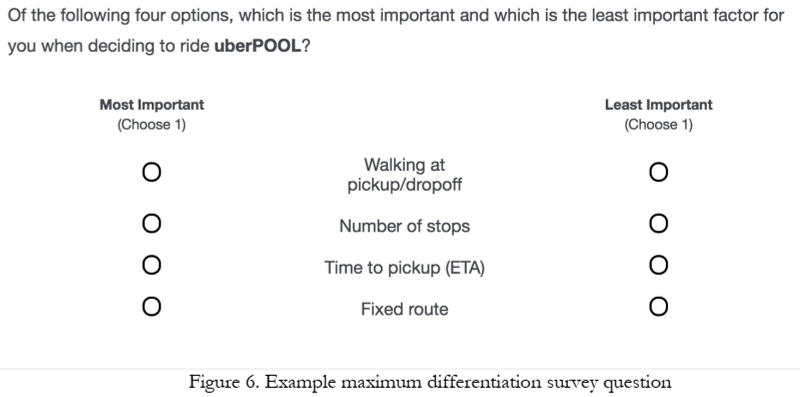
Maxdiff results
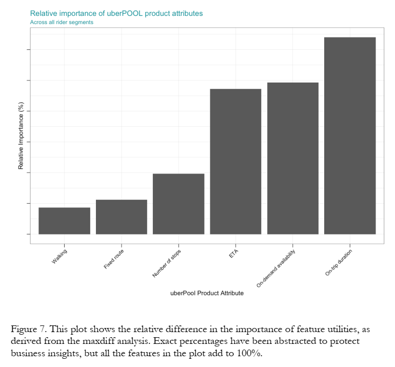
Conjoint Design
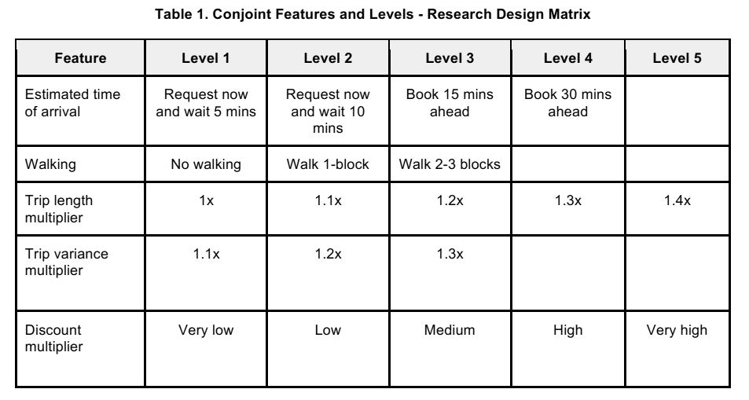
Conjoint Sample Question
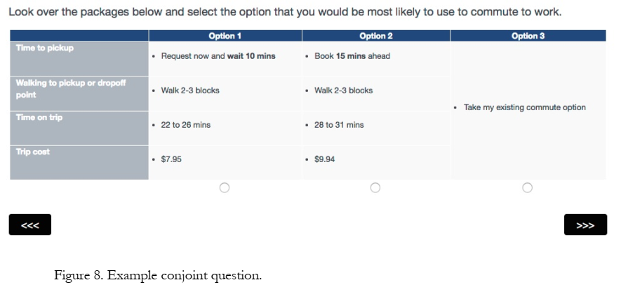
Conjoint Model
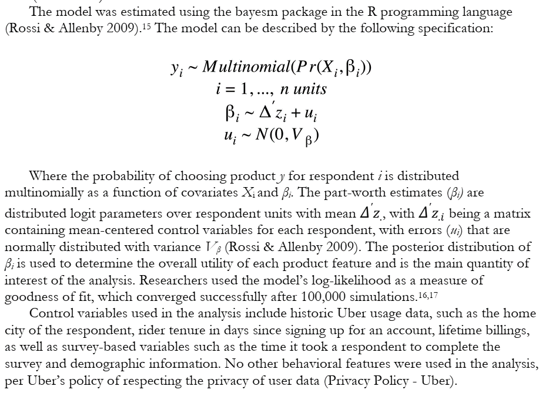
Conjoint Findings
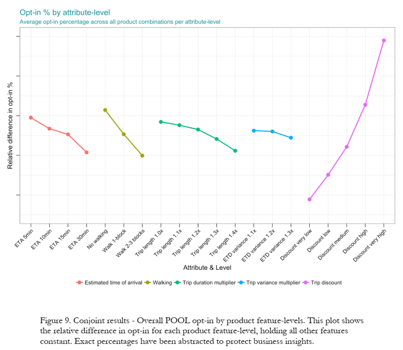
Product Redesign
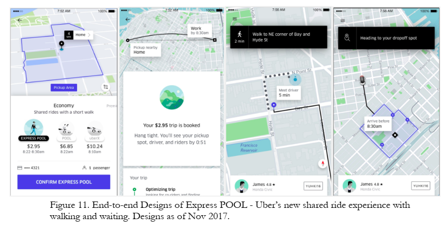
Business Results
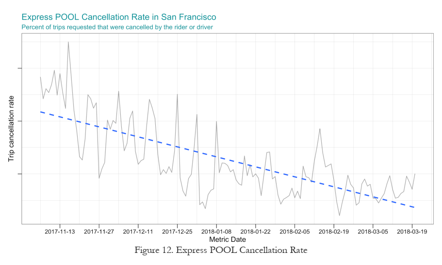
More Products
Conjoint: Limitations, Workarounds
We may fail to consider most important attributes or levels
- But we can consult with experts beforehand and ask participants duringAdditive utility model may miss interactions or other nonlinearities
- But this is testable & can be specified in the utility modelExploring a large attribute space gets expensive
- But we can prioritize attributes and use efficient, adaptive sampling algorithmsAssumes accurate hypothetical choices based on attributes
- But we can train consumers how to mimic more organic choicesParticipants may not represent the market
- But we can measure & debias some dimensions of selectionChoice setting may not represent typical purchase contexts
- But we can model the retail channel and vary # of competing productsParticipant fatigue or inattention
- But we can incentivize them and check for preference reversalsConsumer preferences evolve
- But we can repeat our conjoints regularly to gauge durability
- Suppose you ran a conjoint on university attributes. List 3 product attributes you think would be important to include.
Class script
- Let’s use PCA to draw some product maps.

Wrapping up
Homework
- Let’s take a look
Recap
Market maps use customer data to depict competitive situations
PCA projects high dimensional data into lower dimensional space w minimal information loss
Conjoint analysis uses survey choice data to
- map markets - estimate product attribute utilities - help design products as bundles of attributes - predict how location choice leads to revenues, profitsPreview: 3 readings for next week, budget extra time
Going further
- MGT 108R to design & run conjoint analyses
- Embeddings: Guo and Berkahn (2016)
- The Narrated Transformer Language Model
- Mapping your Competitive Position (HBR 2007)
- The conjoint literature is huge, but Harrison (2022) offers a recent survey of how incentive compatibility affects results